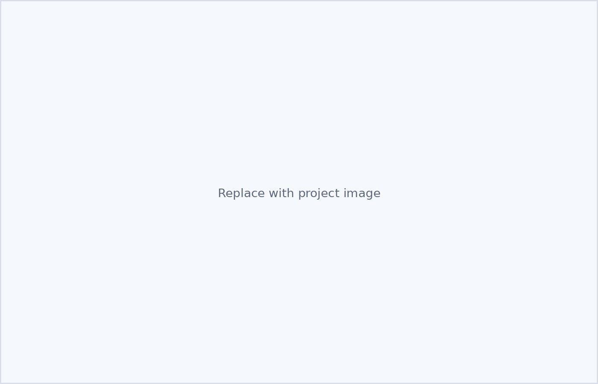

Co-managing Urban Farms for Chemical and Microbial Food Safety, Sustainability, and Economic Resiliency
This project examines how chemical and microbial hazards can be managed together on urban farms while also considering sustainability and economic resiliency. The work builds on prior multi-city urban farm research and is intended to support practical, decision-relevant guidance for growers navigating complex trade-offs.
